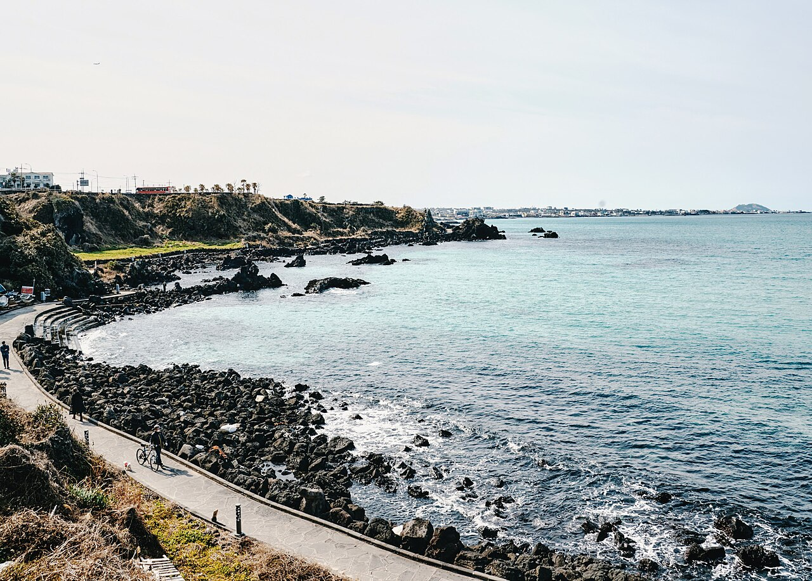
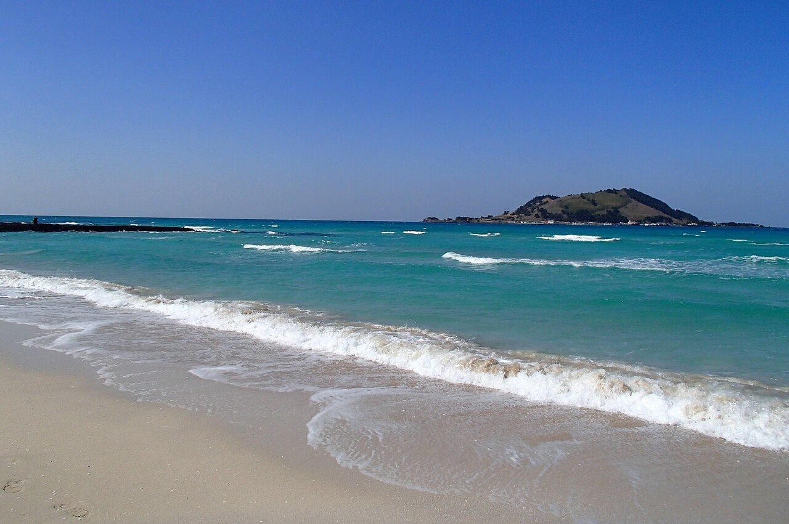
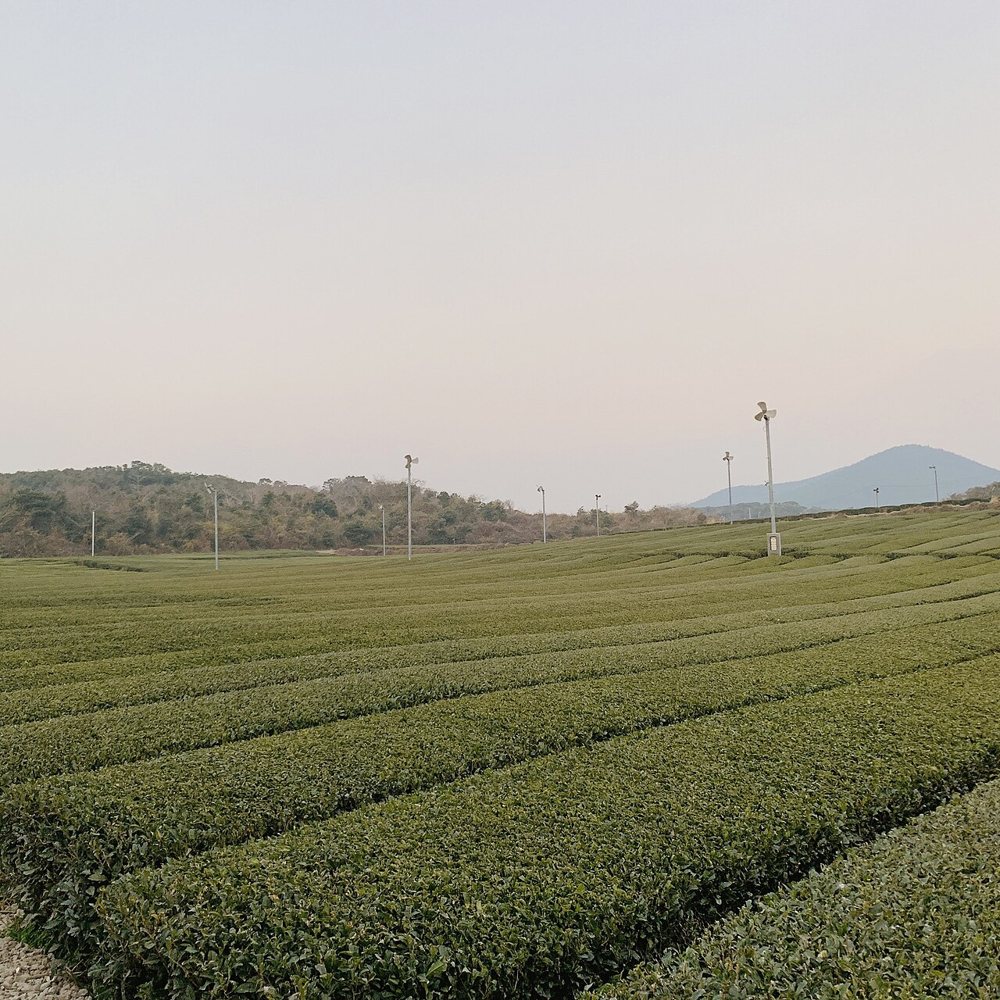
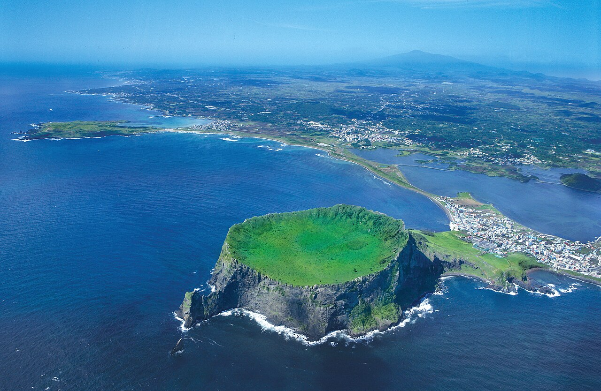
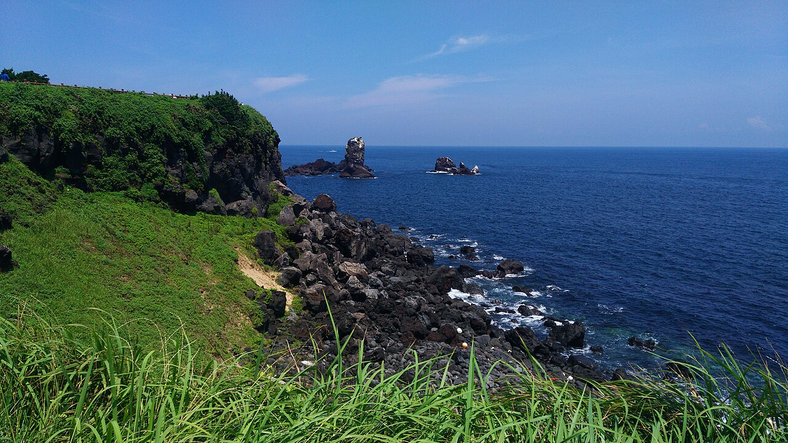
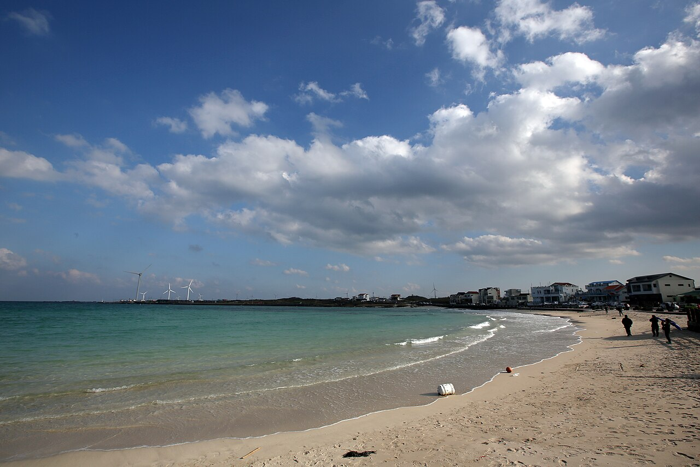
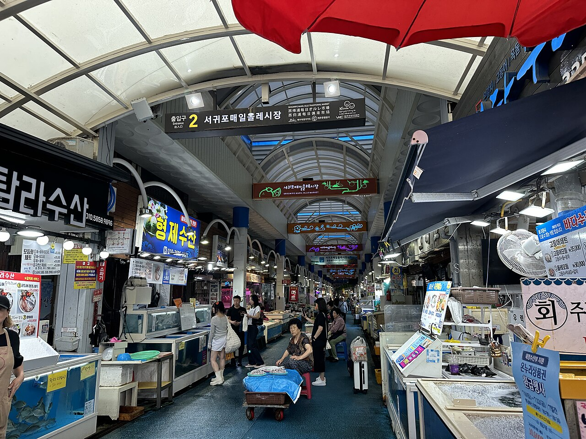
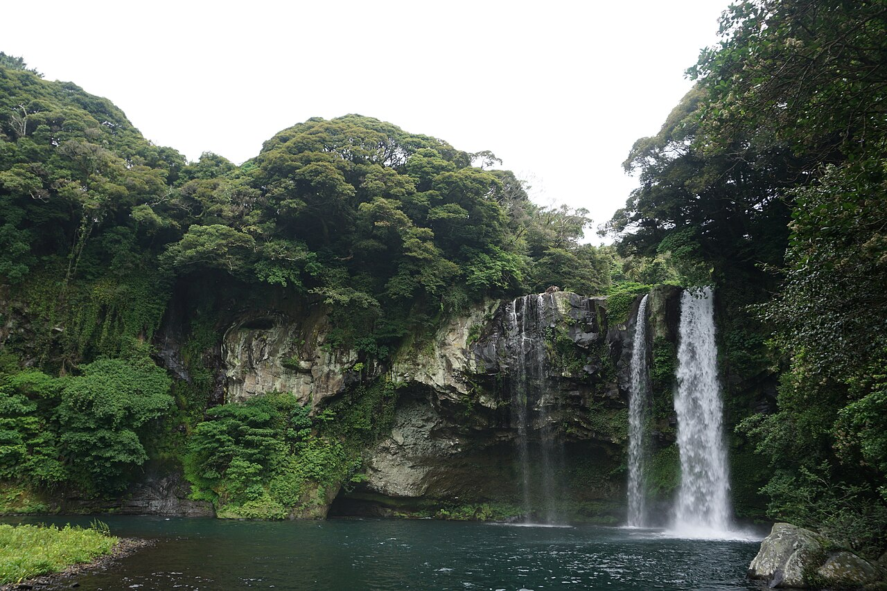
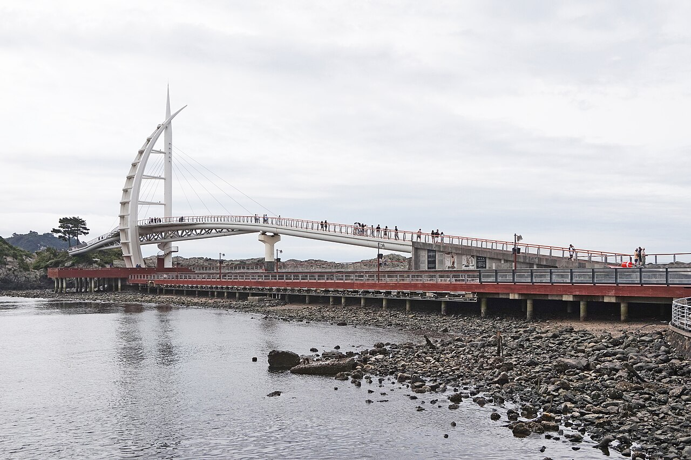

From the clear waters of Aewol and Hyeopjae to Seongsan Ilchulbong, Seogwipo's waterfalls and night sea! Enjoy Jeju's nature and romance in a single day with our A · B · C courses.
Jeju day trip in 3 courses: Aewol coastal trail, Hyeopjae Beach, Seongsan Ilchulbong and Saeyeongyo at night. Pick the course that suits you below, and check each spot's highlights, suggested time, address and local tips.
Western Jeju, where clear emerald seas meet green tea fields

The Handam trail along the black basalt coast
1. Aewol Handam Coastal Trail
애월 한담해안산책로 · Coastal walk / Ocean-view cafés
The Handam Coastal Trail runs about 1.2 km from Handam village in Aewol to Gwakji Beach. The path winds between rugged basalt rocks, bringing you very close to the sea, and the water is so clear you can see the bottom. Cafés and restaurants facing the sea cluster near the start of the trail, perfect for a leisurely break, and it's also famous for sunsets.
Start from the Gwakji Beach side and walk toward Handam so you can end with a café break. It's often windy, so bring a light jacket.

Biyangdo seen across the emerald sea
2. Hyeopjae Beach
협재해수욕장 · Beach / Emerald sea
Hyeopjae Beach is famous for its white sand mixed with crushed shells and its shallow, crystal-clear water. The small island of Biyangdo floats just offshore, so every photo looks like a postcard. The shallow water is great for families with kids, and the pine grove behind the beach offers shade. It connects to neighboring Geumneung Beach for a pleasant walk.
Suggested time
about 1 hour
Address
329-10 Hallim-ro, Hallim-eup, Jeju-si, Jeju
Travel tip
The sea looks its most vivid emerald on sunny afternoons. The sunset behind Biyangdo is beautiful too.

The endless Seogwang green tea fields
3. O'sulloc Tea Museum
오설록 티뮤지엄 · Green tea fields / Café / Exhibition
O'sulloc Tea Museum combines an exhibition on Korean tea culture with a café and gift shop. The wide Seogwang tea fields spread out right in front, so you can walk and take photos between the rows of tea bushes. Green tea ice cream and roll cake are especially popular, and the observation deck overlooks the entire tea field. Many travelers also visit the nearby Innisfree Jeju House.
A volcanic crater rising from the sea and the blue eastern coast

Seongsan Ilchulbong and its crater from above
1. Seongsan Ilchulbong Peak
성산일출봉 · World Natural Heritage / Sunrise spot
Seongsan Ilchulbong is a tuff cone formed by a volcanic eruption in shallow sea about 5,000 years ago, and it was listed as a UNESCO World Natural Heritage site in 2007. At the summit is a huge crater about 600 m across, and its beautiful sunrises gave it the name "Sunrise Peak." A stepped trail takes 20–30 minutes to the top, where you can see the crater, Seongsan village and even Udo island.
Suggested time
about 1.5 hours
Address
284-12 Ilchul-ro, Seongsan-eup, Seogwipo-si, Jeju
Travel tip
To see the sunrise, arrive about an hour before dawn and start climbing. On some days you can watch a haenyeo (female diver) performance on the way down.

The Seopjikoji coast stretching out to sea
2. Seopjikoji
섭지코지 · Coastal scenery / Walking
Seopjikoji combines "seopji," meaning "narrow land," and "koji," Jeju dialect for "cape," describing how it juts out into the sea. A path runs along gentle grassy hills, and from the white lighthouse at the end you get open views of the sea and Seongsan Ilchulbong. It's even prettier in spring when canola flowers bloom, and it has appeared in many dramas and films.
It's about 10 minutes by car from Seongsan Ilchulbong, so the two pair well. It's extremely windy — hold on to your hat.

White sand and clear water at Woljeong-ri Beach
3. Woljeong-ri Beach
월정리해변 · Beach / Café street
True to its name, "where the moon stays," Woljeong-ri Beach is loved for its beautiful sea. The shallow water glows jade green in the sunlight, and cafés and restaurants facing the sea line the beach, perfect for a relaxed end to the day. We also recommend driving the coastal road to nearby Gimnyeong or Sehwa beaches.
Suggested time
about 1–1.5 hours
Address
Woljeong-ri Beach area, Gujwa-eup, Jeju-si, Jeju
Travel tip
Window seats in the beachfront cafés fill up quickly, so go in the early afternoon rather than late. At low tide you can explore the tidal zone between the basalt rocks.
🌊 Course C: Seogwipo Waterfall & Art Walk Night Course
⏱️ About 5–6 hours📍 About 4.0 km
Lee Jung-seop Street and Olle Market, Cheonjiyeon Falls in the forest and the night sea at Saeyeongyo
Suggested route: Seogwipo Maeil Olle Market & Lee Jung-seop Street → Cheonjiyeon Waterfall → Saeyeongyo Bridge & Saeseom Island
An artist's alley, a waterfall and Seogwipo Harbor lit up at night

The lively Seogwipo Maeil Olle Market
1. Seogwipo Maeil Olle Market & Lee Jung-seop Street
서귀포매일올레시장 & 이중섭거리 · Art street / Traditional market
Lee Jung-seop Street commemorates the place where painter Lee Jung-seop stayed with his family in 1951 after fleeing the Korean War. His small thatched-roof house has been restored, and the Lee Jung-seop Art Museum just above it displays his works. Workshops, galleries and cafés line the street, and a flea market is sometimes held on weekends. At nearby Seogwipo Maeil Olle Market you can taste tangerines, raw fish, black pork skewers and other Jeju food.
Suggested time
about 1.5–2 hours
Address
27-3 Ijungseop-ro, Seogwipo-si, Jeju (Lee Jung-seop Art Museum)
Travel tip
The view of the Seogwipo sea and Seopseom island from the hill behind his house resembles the scenery in his paintings. The museum may close on Mondays, so check ahead.

Cheonjiyeon Falls plunging down the cliff
2. Cheonjiyeon Waterfall
천지연폭포 · Waterfall / Forest walk
Cheonjiyeon is Seogwipo's signature waterfall, where water drops from a cliff about 22 m high into a deep pool. Dense warm-temperate forest lines the path from the entrance to the falls, and the valley is protected as a natural monument. It stays open late into the evening, so you can also enjoy the falls under lights.
Suggested time
about 40 minutes–1 hour
Address
2-15 Namseongjung-ro, Seogwipo-si, Jeju
Travel tip
It's an easy, flat 10-minute walk from the entrance to the falls. Come after sunset to see the waterfall lit up.

Saeyeongyo, shaped like a ship with a sail
3. Saeyeongyo Bridge & Saeseom Island
새연교 & 새섬 · Night view / Island walk
Saeyeongyo means "the bridge connecting to Saeseom," and it lets you walk from Seogwipo Harbor to the uninhabited island right in front of it. Its sail-shaped pylon is modeled on the "teu," a traditional Jeju raft, and after sunset the entire bridge lights up the Seogwipo night sea. Across the bridge, a walking path of just over 1 km circles Saeseom with sea views along the way.
Suggested time
about 1 hour
Address
707-4 Seohong-dong, Seogwipo-si, Jeju
Travel tip
It's within walking distance of Cheonjiyeon Falls, so visit both in the evening. The Saeseom trail may be closed at night, so check before you go.
Opening hours, fees and access restrictions can change with the season and local conditions. Please check each place's official information before you visit.